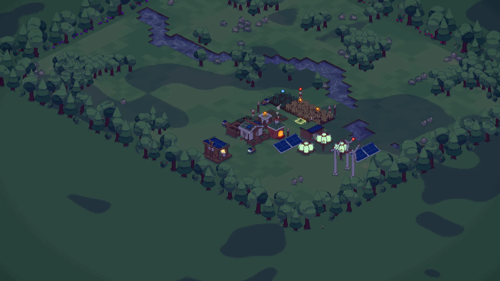

Gold · commission 2 complete
Morning Bread
0:00gold 35:00silver 52:30
Freight depot · receipt
Morning Bread · 0:00 to 31:48
Bread150 × 223,300
Flour18 × 7126
Egg6 × 636
Bran24 × 124
Manure12 × 112
Earned3,498 credits
The run
150 bread over 31 minutes
What made the difference
Bakery waiting on egg41%
One coop until 21:40: bread at 4.2 a minute, then 5.1 with two.
Nights short of power4 of 8
Mill and bakery stopped 1:25 of play in all, on still nights.
Trucks idle18%
Mostly waiting for full loads at the field silo.
Next time · a second coop by 13:00 would have finished near 29:50.
58
The valley, left better
Soil 58 at the end · trees +31
Goal was 40+. 6 saplings still growing.